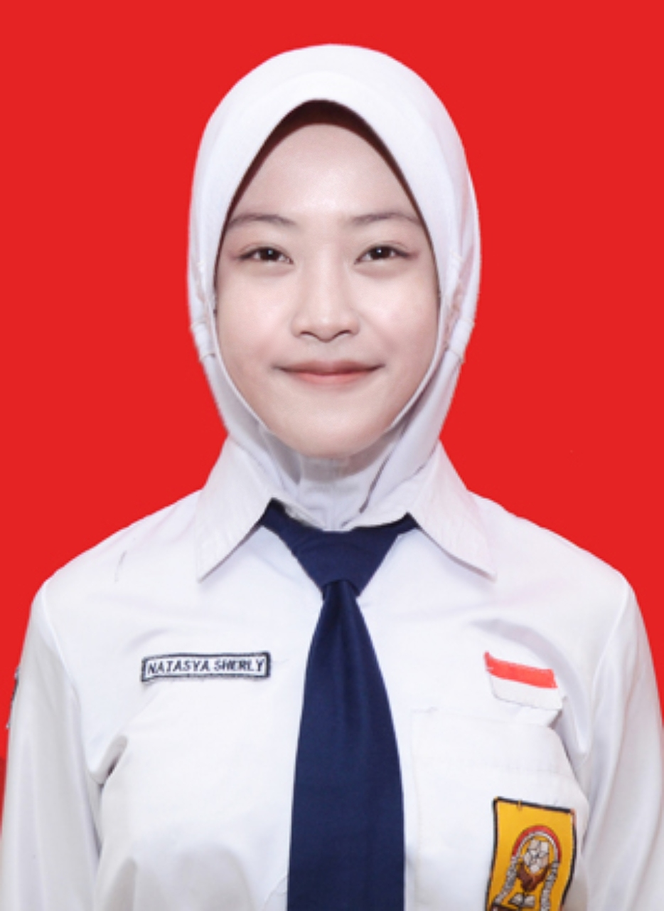
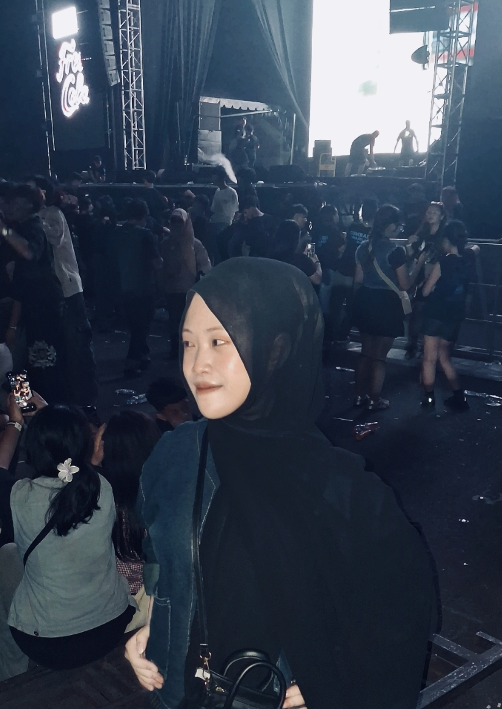

Halo, selamat datang di web profile saya. Di sini, Anda bisa
mengenal saya lebih dekat, mulai dari profil, minat, pengalaman,
sampai hal-hal yang saya sukai.
Untuk melihat lebih banyak tentang saya, silakan klik tombol
di bawah ini dan jelajahi website saya.
Saya termasuk orang yang lebih banyak diam ketika berada di lingkungan baru, tetapi bisa cukup ramai kalau sudah merasa dekat. Saya suka menghabiskan waktu bersama teman, menonton, dan mendengarkan musik. Selain itu, saya juga tertarik dengan dunia desain, teknologi, dan fotografi. Saya lebih suka menjalani dan menunjukkan diri saya apa adanya.
Lihat Biodata Lengkap
Informasi dasar mengenai identitas saya
Informasi mengenai riwayat pendidikan dan organisasi saya
Kombinasi karakter positif serta keterampilan yang saya miliki
Beberapa karya yang pernah saya buat
Perancangan web pribadi modern dengan animasi transisi dan landing page.
Desain poster, desain konten, dan editing video.
Beberapa foto dan momen yang saya suka.